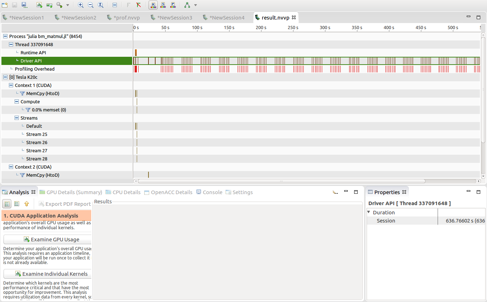

Week 3:4
These two weeks showered on me an immense amount of knowledge. I came to know various new topics which not only improved my GPU computing skills but developed in me an increased interest in the Julia language. I also came to know various issues which the language faces. They might not seem to be causing too big an impact, but when it comes to GPU computing, where datatypes and memory allocations create a big deal, these issues are pretty serious. Nevertheless, my mentor Simon Danisch, helped me overcome them by showing me alternate ways and giving me proper suggestion and guidance.
The first thing which I learnt about Julia was that all arrays were stored in the heap memory, unlike C which gives a choice for the same. Anything which is mutable is kept in the heap memory, arrays included. This is done perhaps because arrays in Julia are far more mutable compared to arrays in C. For instance, their datatype can be changed as well, unlike in C. Therefore, creatation of arrays which are to be stored in the register memory of a GPU was failing, as a GPU does not feature heap memory. The only way to to go about this was by using tuples, which are immutable. But mutability was also an important need in the matmul kernel which I was developing. Hence, my mentor came up with an idea to keep rewriting the complete tuple again and again whenever something had to be changed in it. But the problem didn't end there.
Type inference is a feature by which the datatype of an expression is determined automatically by the programming language. This feature is absent in C, but is pretty standard in most interpreter-based programming languages today, including Julia. But there are some issues here as well. Under a closure, Julia often promotes datatypes to that of its parent. This causes a problem on a GPU, as it might lead to variables getting the type Any which obviously cannot be determined by a GPU. To resolve this, my mentor came up with a function which featured meta programming.
A metaprogram is a program that manipulates other programs (or itself) as its data. A compiler fits as an example. Julia supports metaprogramming. Julia represents its code as a data structure of the language itself. The function featuring metaprograms was meant to be inline. A generated function is one which is created automatically out of a metaprogram function catering to a particular kind of inputs. Multiple functions are generated depending on the variants of input so that the function itself does not have to dynamically determine the input and separate functions would exist for all possibilities of the input. Inside a closure there might be a type inference issue, which is highlighted clearly in this issue created by Tim Holy.
Julia was hence unable to infer datatypes properly inside a closure. When kernel code subjected to this issue was being executed, it resulted in errors. Hence, a metaprogram function was used which would take up all the external parameters which were to be used inside the closure and converted them to local variables. This kept their datatype intact and the kernel worked without an issue.
But the matmul kernel was slow and currently I am into exploring various profiling options to find out the reason behind this. I tried out the command line profiler nvprof which was initially hiding some key information. But with assitance from Tim Besard, I was able to discover that synchronisation of threads was the one taking too much time. He suggested me to use the visual profiler nvvp which would be able to reveal more information. I tried out the visual profiler on the matmul kernel. But I am yet to look through the various options available. The visual profiler looks like this:
I also worked on developing a kernel for repeat which is a part of Base. There is an overhead of time in various models developed using Flux which could be solved by this kernel. The feedforward kernel for repeat is ready already and it appears to be pretty fast compared to the CPU implementation which is in Base. I also faced similar issues while making the kernel, but this time it was easy to resolve them. There's a pull request regarding the same here.
I must say that the Julia community is awesome and help is always at hand. One needs to know how to seek proper help. Experts from every field are a part of this team. My first month of GSoC at Julia has been awesome!